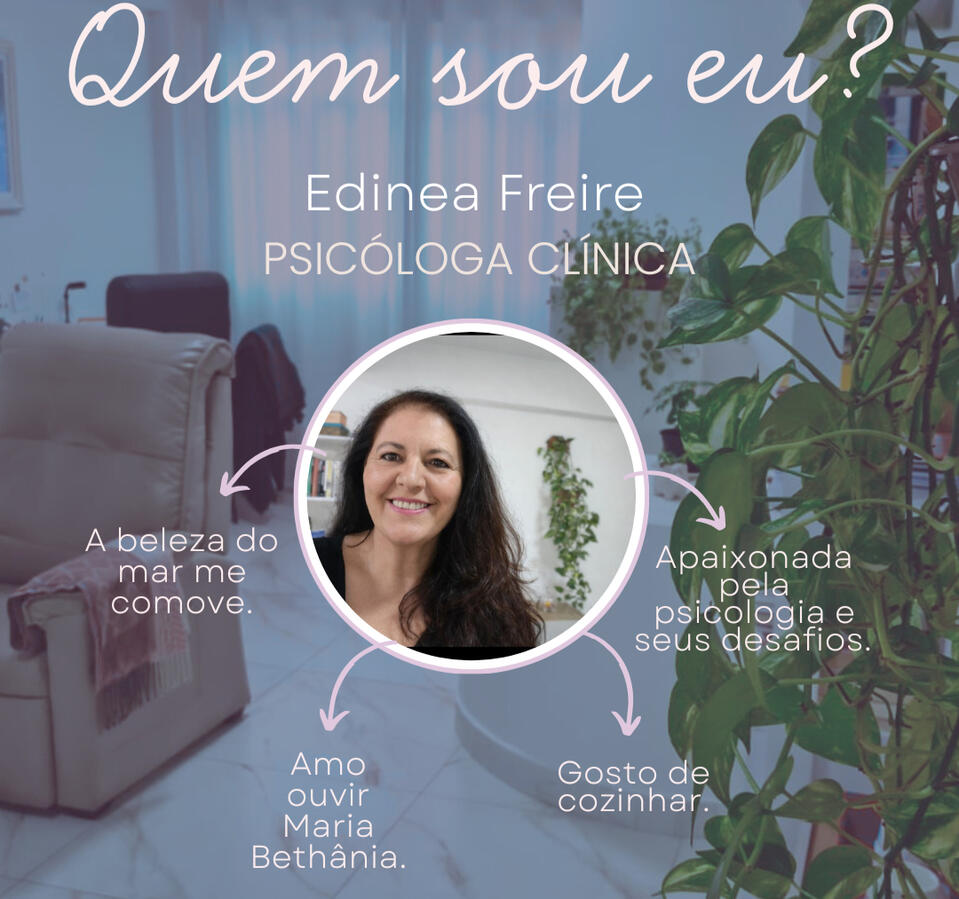
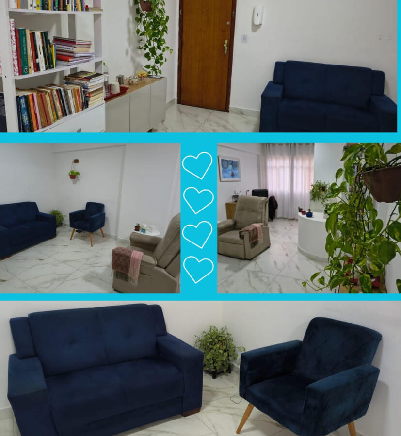

Depressão e distimia
Acolhimento do sofrimento e construção de caminhos possíveis, inclusive diante de quadros profundos e persistentes.

Atendimento humanizado
Atendimentos presenciais em Viçosa - MG e online ao redor do mundo.

Terapia Cognitivo-Comportamental · TCC
Sou psicóloga com abordagem em Terapia Cognitivo-Comportamental (TCC), com especialização e experiência no cuidado de pessoas que enfrentam depressão — inclusive em suas formas mais profundas —, distimia, ansiedade, questões nos relacionamentos e os desafios do autismo feminino na vida adulta.
Meu trabalho é um espaço de escuta qualificada, mas também de construção: juntos, buscamos compreender pensamentos, emoções e padrões que, muitas vezes, aprisionam — e criar novas possibilidades de viver com mais leveza, consciência e sentido.
Cada história é única. E é com respeito, técnica e sensibilidade que caminho ao lado de quem decide cuidar de si.
Como posso ajudar
Um processo construído de forma singular, respeitando sua história, seu tempo e suas necessidades.
Acolhimento do sofrimento e construção de caminhos possíveis, inclusive diante de quadros profundos e persistentes.
Compreensão dos gatilhos, pensamentos e padrões para desenvolver recursos de regulação e mais autonomia.
Um olhar cuidadoso para vínculos, limites, comunicação e formas mais seguras de se relacionar.
Reconhecimento, validação da trajetória e construção de uma vida mais coerente com seu funcionamento único.
Um olhar especializado
O autismo na vida adulta, especialmente em mulheres, muitas vezes passa anos sem nome — mas não sem dor. São histórias marcadas por tentativas intensas de adaptação, sensação de inadequação, exaustão social e, por vezes, um sofrimento silencioso que não foi compreendido ao longo da vida.
No processo terapêutico, meu trabalho é oferecer um espaço de reconhecimento e validação dessa trajetória. A partir da Terapia Cognitivo-Comportamental (TCC), construímos caminhos mais gentis, respeitando o funcionamento único de cada pessoa, favorecendo autonomia, regulação emocional e relações mais seguras.
Dar nome à própria experiência pode ser profundamente libertador — e, muitas vezes, é aí que uma nova forma de existir começa.
Quem sou eu?
Mineira e meio Campineira, mas que também ama a Bahia. Psicóloga apaixonada por esse ofício lindo, acredito profundamente na potência do encontro humano e na capacidade que cada pessoa tem de transformar a própria história.
Minha grande alegria é acompanhar meus pacientes em suas conquistas, ver o florescer da autoestima, da coragem, do autoconhecimento e a transformação de suas vidas. Alegre, acolhedora e bem-humorada, gosto de construir vínculos genuínos e de fazer da terapia um espaço seguro, leve e verdadeiro.
Amo família, amigos, livros, o mar da Bahia, conversas que aquecem o coração e a música que embala a vida — especialmente MPB e a voz de Maria Bethânia.
Trago para a prática clínica tudo aquilo que considero essencial: sensibilidade, escuta, afeto, profundidade e esperança, baseado em ciências e muito estudo. E sou uma otimista apaixonada pela vida e mudança de vida através da terapia!
Espaço de atendimento
Atendimento presencial em Viçosa - MG e online, para que o cuidado possa estar presente onde você estiver.
Conheça nosso espaço
Um caminho possível
A terapia é, antes de tudo, um encontro consigo mesmo. Ao longo desse caminho, aprendemos a reconhecer padrões, compreender emoções, questionar pensamentos que limitam e abrir espaço para novas formas de viver.
Não é um processo imediato — mas é profundamente transformador. Com base na Terapia Cognitivo-Comportamental (TCC), o trabalho terapêutico une técnica e sensibilidade para promover mudanças concretas na forma de pensar, sentir e agir.
Pequenos movimentos internos, quando sustentados, têm o poder de transformar a vida de maneira significativa. Muitos dos que passam por esse processo descrevem não apenas alívio do sofrimento, mas um reencontro com sua própria história, com mais clareza, autonomia e sentido.
Processos reais
Os relatos a seguir não são sobre vidas perfeitas — são sobre pessoas que decidiram se olhar com mais honestidade, enfrentar seus próprios padrões e construir novas formas de existir.
A mudança é possível — e ela começa, muitas vezes, com a decisão de olhar para si com mais cuidado.
Cada história que chega à terapia carrega dores, dúvidas e, muitas vezes, uma sensação silenciosa de estar perdido em si mesmo. Mas também carrega algo muito importante: a possibilidade de mudança.
A terapia não apaga a história de ninguém. Mas ela pode transformar a forma como essa história é vivida. E, pouco a pouco, aquilo que antes era sofrimento pode se tornar compreensão, escolha e caminho.
Talvez, em alguma dessas palavras, você também se reconheça.Seu cuidado pode começar aqui
Se fizer sentido para você, entre em contato para conhecer o processo terapêutico e verificar horários disponíveis.